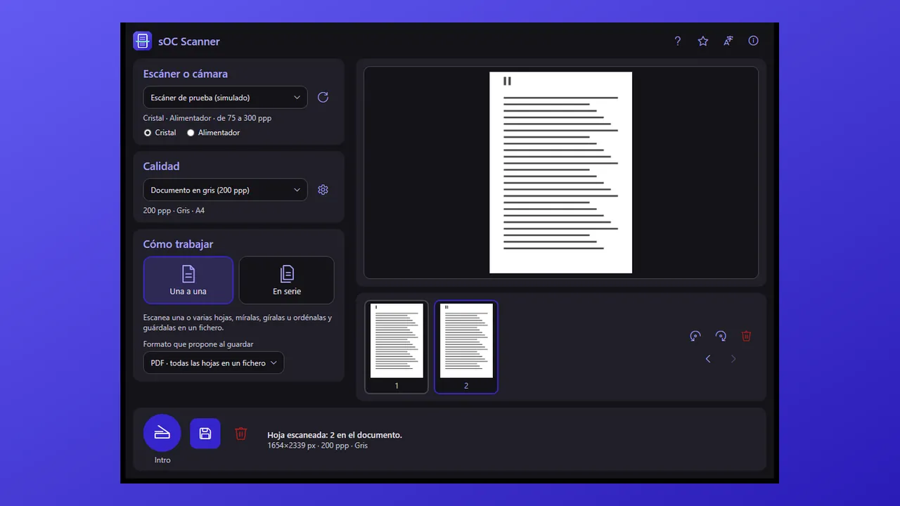
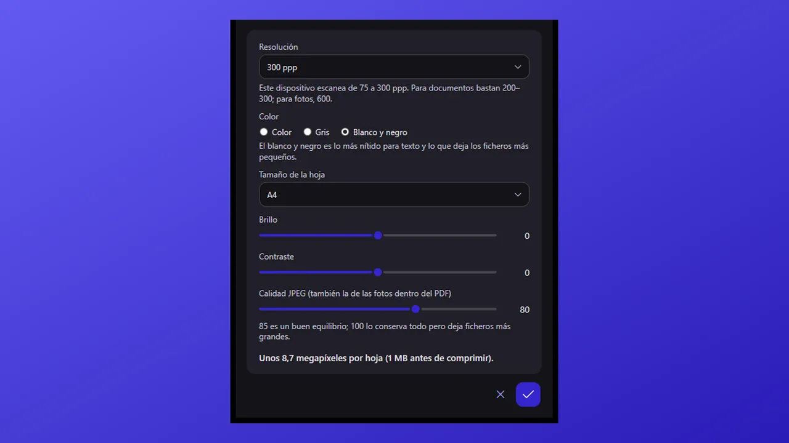

Support · sOC Scanner
How sOC Scanner works, screen by screen, and what every option does.
In this guide



sOCScanner.exe executable from the GitHub releases page (https://github.com/donki/Scanner/releases) and double-click it: there is nothing to install. If Windows warns that the publisher is unknown, click «More info» and «Run anyway».Requirements: Windows 10 (version 2004) or later, or Windows 11, 64-bit. The scanner has to be added in Windows (Printers & scanners) with the manufacturer's driver.
The first time, the «Setup guide» opens, step by step (Back / Next at the bottom): your scanner or camera in Windows (with a button to Printers & scanners), the camera permission (only if you use one), the quality, and the batch folder and names. Each step says whether it is done, pending or optional. Open it again whenever you like with the help button (?).
The gear next to the quality opens a dialog: resolution (only those the chosen device supports), colour, grey or black-and-white, page size (A4, Letter, A5 or the whole glass), brightness, contrast and JPEG quality (also used for photos inside the PDF). At the bottom you see the megapixels per sheet and its size before compression.
Choose the folder, the format and the name: what goes before and after the number, the next number and its digits. Each sheet saves itself as soon as it is scanned, and the name of the next one is shown. If a number already exists it skips to the next free one: a file is never overwritten.
Open an issue on GitHub telling us what's happening, with which version and device.